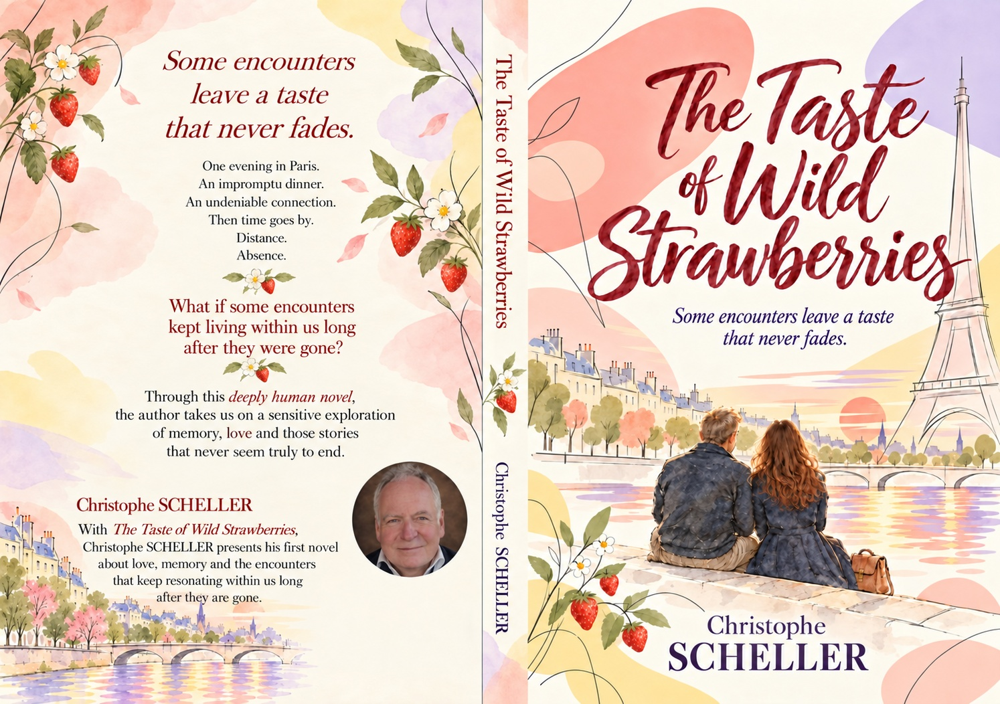

A novel by Christophe Scheller
The Taste of Wild Strawberries
Some encounters never become a life together. They become part of us.
Christophe no longer expected an encounter that could turn his life upside down. Then came Juliana. A few days in Paris, two lives separated by an ocean, and a story whose ending becomes the beginning of another journey.

Step into the encounter
The first glance
Read a passage here, without signing up.
Then Christophe looked up.
He saw her.
Her light brown hair, touched with lighter strands, fell freely over her shoulders. A delicate face, dark, very expressive eyes.
She was beautiful.
But it was not really her beauty that held his gaze.
It was her smile.
A broad, spontaneous smile that seemed to spread across her whole face, all the way to her eyes.
She was talking to her friend, sometimes accompanying her words with a gesture of her hand. Then she listened. Laughed. Became attentive again.
She seemed unaware that anyone might be watching her.
And yet Christophe was watching her.
Christophe looked away.
A few seconds later, without even realising it, he was looking at her again.
Hassan was still talking about the breakup he could not understand.
Christophe was listening.
Or at least trying to.
His gaze kept returning to her.
There was something deeply alive about this woman. A way of being wholly present, in a conversation, in laughter, in the moment.
He knew nothing about her.
Not her name.
Not her age.
Not the city where she lived.
Not even the language she was speaking.
He knew nothing of the life behind that smile.
For now, all he saw was a woman sitting a few tables away.
And a smile that, for a reason he did not yet understand, kept him from looking anywhere else for long.
One thing eventually became clear to him.
He did not want to leave this restaurant without speaking to her.
He stood up.
Without a plan.
Without really knowing what he was going to say.
When he reached her table, Juliana looked up at him.
For the first time, their eyes truly met.
Up close, Christophe found again the smile that had held his gaze. But he also discovered her eyes, lively, curious, almost amused to see this stranger standing before her table.
He hesitated for a second.
“Excuse me… I’d like to keep a memory of this evening. Would you mind if I took your photograph?”
Juliana seemed surprised.
There was clearly something unexpected about the request.
Then she smiled again.
“Of course.”
Christophe took the photograph.
He could have thanked her and returned to his table.
He did not.
A few words led to others.
He learned that she was Brazilian, that she came from Brasília and was in Paris for a training placement with the fire service. She told him about her work, her stay, the city she was discovering with such enthusiasm.
She would be leaving in three days.
Three days.
Christophe looked at her friend, then turned back to Juliana.
“And your husband? Is he a firefighter too?”
Before Juliana even had time to answer, her friend burst out laughing.
“No, she’s single!”
Juliana rolled her eyes with a smile, caught between amusement and embarrassment.
Christophe laughed too.
“Well… so am I.”
This time, they looked at each other for a few seconds longer.
Nothing spectacular.
Just a smile exchanged between two strangers in a Parisian restaurant.
Christophe asked for her number so he could send her the photograph.
She gave it to him.
Everything had been astonishingly simple.
Readers share their thoughts
A moving, respectful, intelligent story that I will probably remember for a long time. Bravo.
This book is a pleasure to read, with fluid and precise writing.
An intense and captivating adventure, remarkably well written, filled with feelings that lift the soul, where tolerance is ever-present and commands respect. An absolute must-read.
Choose your edition
The novel is available in French, English and Brazilian Portuguese. Find formats and prices on Amazon.

A few words about the author
An engineer, Christophe Scheller spent thirty years in the world of projects. In his first novel, he explores love, memory and the ways certain encounters continue to change us.
Explore the world of the novel ↗